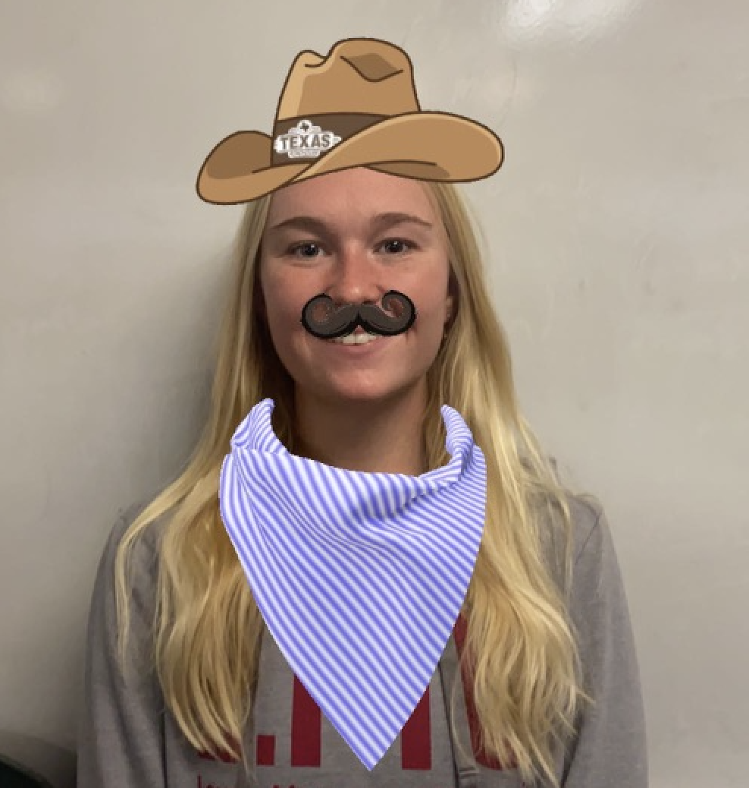
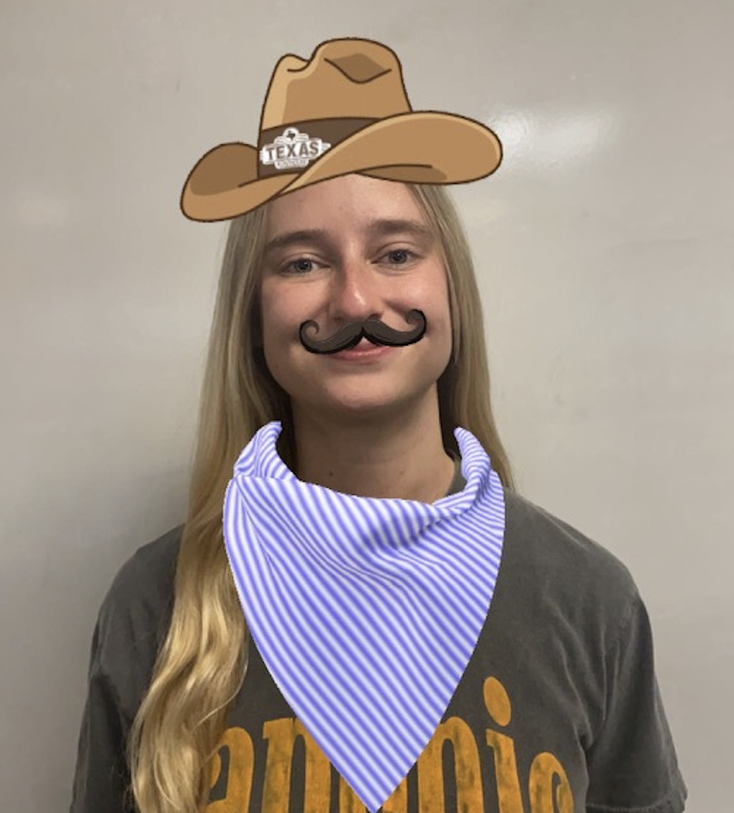
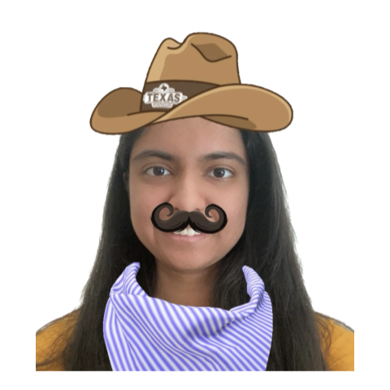

| Anna |
 |
Anna is a Computer Science major and she loves her grandma a lot. Also, being from Kansas, she is naturally equipped with some of the skills needed in crafting a cowboy focused language. |
| Alex |
 |
Alex is a third year computer science major at LMU. When she isn’t working on YeeHaw, she enjoys spending time with her friends, playing video games, or watching movies. |
| Arusha |
|
Arusha is majoring in computer science at Loyola Marymount university and minoring in business administration. Arusha also loves cats, listening to Taylor swift, reading, and watching New Girl. |
| Saarah |
 |
Saarah is a junior computer science major at LMU with an interest in Data Science and Web Development. In her free time, you can find her working on one of her crochet projects or browsing Reddit. Some of her favorite video games include Stardew Valley and The Legend of Zelda: Breath of the Wild. |
| Adam |
|
Adam is a student-athlete majoring in computer science and is member of the track and cross country teams at LMU. |
| Hunter |
|
Hunter Krasa is a junior Computer Science student at Loyola Marymount University. His experience in developing virtual instruments as part of the Summer Undergraduate Research Program and interning as a Software Engineering Intern at State Farm has equipped him with a strong foundation in programming and software development. In addition to his academic pursuits, Hunter is also a dedicated athlete, participating in the Cross Country and Track and Field teams at Loyola Marymount University. |